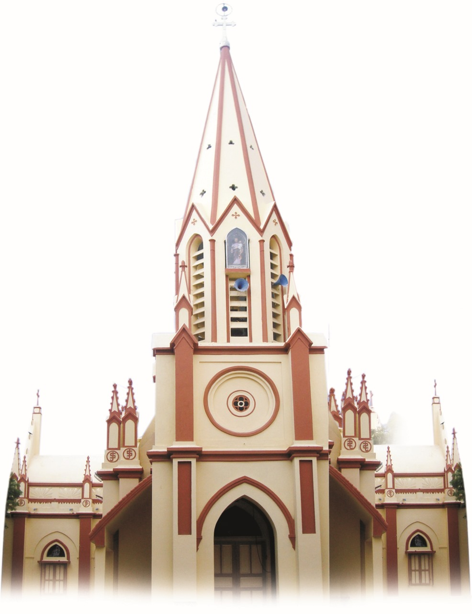

ST.JOSEPH'S CHURCH ⛪
SAMAYANALLUR,MADURAI DISTRICT.
.png) |
|

PARISH NAME : ST.JOSEPH'S CHURCH
ADDRESS : ST.JOSEPH'S CHURCH,SAMAYANALLUR-625402
PATRONT SAINT : ST. JOSEPH THE WORKER
BRIEF HISTORY ⬇️
The origin starts from the later part of18th century when some group of Catholic farmers from Pudukkottai settled and cultivated betel leaves here later the village developed in population and importance and two thiyagarajar cotton spinning mills were started in the locality of madurai road.Many from sivagangai area came and placed here.The parish was created in 1910 with FR.PRINCE SJ,as the parish priest in 1923 he laid the foundation for the church which was completed by FR.MONTAUD SJ in 1932
Devoted ministers have been serving the people . FR.GARNIER SJ was brought to mention his period 𝚑𝚎𝚛𝚎. 𝙵𝚁.𝚃.𝙺𝚄𝚁𝙸𝙴𝚄 𝚂𝙹 𝚎𝚛𝚎𝚌𝚝𝚎𝚍 the church Tower. ; FR.ARUL RAYAN, FR.PINTO and FR.FRANCIS XAVIER worked to raise the spiritual level of their flock ; during the time of 𝙵𝚁.𝙻𝙾𝚄𝚁𝙳𝙷𝚄 𝚄𝙱𝙰𝙶𝙰𝚁𝙰𝙼 the silver jubilee of the church was celebrated
FR. ALEXIS who served the Paris for 18 years built the two storeyed building for the school the growth of GROTTO of OUR LADY OF FATIMA and extended the church. Fr. ALEXIS had to fight in order to get that officially sanctioned for the cemetery. There was plot of ground behind the church which the father thought would be useful for a convent . it look nearly ten years of struggle to get the place..!
📒 DIRECTORIES